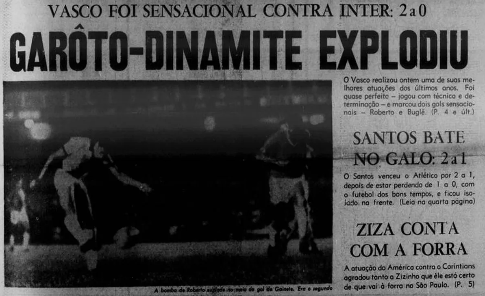
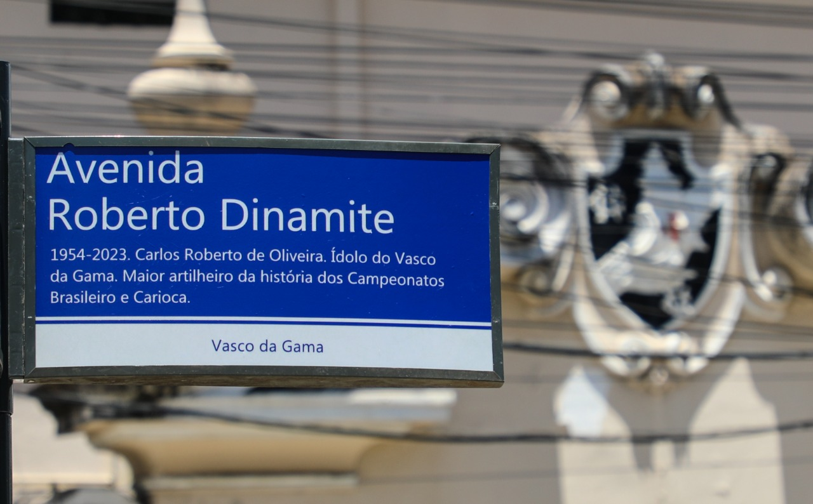

Roberto Dinamite (1954 - 2023)
Conheça Roberto Dinamite
Carlos Roberto de Oliveira mais conhecido como Roberto Dinamite, foi um jogador de futebol brasileiro que atuou como centroavante. Considerado o maior ídolo da história do Club de Regatas Vasco da Gama, fez história no clube cruzmaltino durante as décadas de 70, 80 e 90, encerrando a carreira no mesmo time. Também foi presidente do club entre 2008 e 2014. Dinamite dedicou 21 dos seus 22 anos como jogador do Vasco da Gama, sendo o maior goleador da história do clube, com 708 gols, e o atleta com mais jogos disputados (1110 partidas), bem como o maior artilheiro do Estádio de São Januário, com 184 gols.
Início da Carreira
Roberto começou a jogar futebol em times amadores de sua cidade natal até ser descoberto e ingressar na base do Vasco da Gama, onde estreou profissionalmente em 1971. Seu talento foi rapidamente reconhecido, e ele se tornou uma referência no ataque da equipe.
Apelido e Destaque
Em sua sua estreia no Maracanã, aos 17 anos o ainda garoto Roberto fez um dos gols sobre o Inter na vitória cruzmaltina por 2x0. A Manchete do "Jornal dos Sports", após a vitória fez o apelido virar o sobrenome do maior ídolo da história do Vasco.
Manchete do "Jornal dos Sports"
Conquistas
Títulos 🏆
Dinamite tem uma lista extensa de títulos coletivos e individuais, aqui deixamos os de mais destaque. Confira a lista completa aqui
- Como jogador:
- Campeonato Carioca:(🏆 1977, 🏆 1982, 🏆 1987, 🏆 1988 e
🏆 1992). - Campeonato Brasileiro 🏆 (1974).
- Como Presidente:
- Copa do Brasil 🏆 (2011).
Recordes ⚽
- Jogador que mais atuou pelo Vasco da Gama (1.110 partidas)
- Maior artilheiro da história do Vasco da Gama (708 gols)
- Maior artilheiro da história do Campeonato Brasileiro
- Maior artilheiro da história do Estádio São Januário
- Maior artilheiro da história do Campeonato Carioca
- Maior artilheiro do clássico Vasco vs. Flamengo
- Maior artilheiro do clássico Vasco vs. Botafogo
- Maior artilheiro do clássico Vasco vs. Fluminense
Legado e Falecimento
Roberto Dinamite é lembrado como um dos maiores jogadores da história do futebol brasileiro, símbolo de talento, lealdade e paixão pelo esporte. Sua morte, em janeiro de 2023, foi resultado de complicações de um câncer no intestino, diagnosticado em 2021. Sua trajetória segue inspirando gerações de torcedores e atletas.
Após sua morte, a rua General Almério de Moura, onde reside o estádio São Januário, do Vasco da Gama, foi oficialmente renomeada para Avenida Roberto Dinamite.
